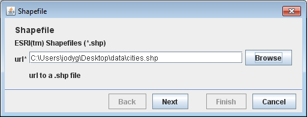

Query Tutorial¶
Welcome¶
Welcome to Geospatial for Java. This workbook is aimed at Java developers who are new to geospatial and would like to get started.
Please set up your development environment prior to starting this tutorial. We will list the maven dependencies required at the start of the workbook.
This tutorial illustrates how to query spatial data in GeoTools. In the earlier tutorials we have been working with shapefiles. The focus of this workbook is the Filter API used to query DataStores, such as shapefiles and databases, and Web Feature Servers.In this lab we will also bring out the big guns - a real spatial database.
If you are working in an enterprise that has as spatial database (e.g. Oracle, DB2) or geospatial middleware (e.g. ArcSDE) you can use GeoTools to connect to your existing infrastructure. Here we will use PostGIS which is a spatially-enabled extension of PostgreSQL supporting Simple Features for SQL. We will build an application that can connect to both a PostGIS database and shapefiles.
We are trying out a code first idea with these workbooks ‐ offering you a chance to start with source code and explore the ideas that went into it later if you have any questions.
This workbook is featured as part of OSDC2011, FOSS4G 2010 and FOSS4G 2009 conferences.
Jody Garnett
Jody Garnett is the lead architect for the uDig project; and on the steering committee for GeoTools; GeoServer and uDig. Taking the role of geospatial consultant a bit too literally Jody has presented workshops and training courses on every continent (except Antarctica). Jody Garnett is an employee of LISAsoft.
Michael Bedward
Michael Bedward is a researcher with the NSW Department of Environment and Climate Change and an active contributor to the GeoTools users’ list. He has a particularly wide grasp of all the possible mistakes one can make using GeoTools.
Query Lab Application¶
The QueryLab.java
example will go through using a Filter to select a FeatureCollection from a shapefile or other
DataStore.
We are going to be using connection parameters to connect to our DataStore this time; and you will have a chance to try out using PostGIS or a Web Feature Server at the end of this example.
Please ensure your pom.xml includes the following:
<properties> <project.build.sourceEncoding>UTF-8</project.build.sourceEncoding> <geotools.version>13-SNAPSHOT</geotools.version> </properties> <dependencies> <!-- Provides map projections --> <dependency> <groupId>org.geotools</groupId> <artifactId>gt-epsg-hsql</artifactId> <version>${geotools.version}</version> </dependency> <!-- Provides support for PostGIS. Note the different groupId --> <dependency> <groupId>org.geotools.jdbc</groupId> <artifactId>gt-jdbc-postgis</artifactId> <version>${geotools.version}</version> </dependency> <!-- Provides support for shapefiles --> <dependency> <groupId>org.geotools</groupId> <artifactId>gt-shapefile</artifactId> <version>${geotools.version}</version> </dependency> <!-- Provides GUI components --> <dependency> <groupId>org.geotools</groupId> <artifactId>gt-swing</artifactId> <version>${geotools.version}</version> </dependency> </dependencies>
Create the QueryLab class and copy and paste the following to get going:
/* * GeoTools - The Open Source Java GIS Toolkit * http://geotools.org * * (C) 2006-2008, Open Source Geospatial Foundation (OSGeo) * * This file is hereby placed into the Public Domain. This means anyone is * free to do whatever they wish with this file. Use it well and enjoy! */ package org.geotools.tutorial.filter; import java.awt.BorderLayout; import java.awt.Dimension; import java.awt.event.ActionEvent; import java.util.Map; import javax.swing.ComboBoxModel; import javax.swing.DefaultComboBoxModel; import javax.swing.JComboBox; import javax.swing.JFrame; import javax.swing.JMenu; import javax.swing.JMenuBar; import javax.swing.JOptionPane; import javax.swing.JScrollPane; import javax.swing.JTable; import javax.swing.JTextField; import javax.swing.table.DefaultTableModel; import org.geotools.data.DataStore; import org.geotools.data.DataStoreFactorySpi; import org.geotools.data.DataStoreFinder; import org.geotools.data.Query; import org.geotools.data.postgis.PostgisNGDataStoreFactory; import org.geotools.data.shapefile.ShapefileDataStoreFactory; import org.geotools.data.simple.SimpleFeatureCollection; import org.geotools.data.simple.SimpleFeatureIterator; import org.geotools.data.simple.SimpleFeatureSource; import org.geotools.filter.text.cql2.CQL; import org.geotools.swing.action.SafeAction; import org.geotools.swing.data.JDataStoreWizard; import org.geotools.swing.table.FeatureCollectionTableModel; import org.geotools.swing.wizard.JWizard; import org.opengis.feature.simple.SimpleFeature; import org.opengis.feature.type.FeatureType; import org.opengis.filter.Filter; import com.vividsolutions.jts.geom.Coordinate; import com.vividsolutions.jts.geom.Geometry; import com.vividsolutions.jts.geom.Point; /** * The Query Lab is an excuse to try out Filters and Expressions on your own data with a table to * show the results. * <p> * Remember when programming that you have other options then the CQL parser, you can directly make * a Filter using CommonFactoryFinder.getFilterFactory2(). */ public class QueryLab extends JFrame { private DataStore dataStore; private JComboBox featureTypeCBox; private JTable table; private JTextField text; public static void main(String[] args) throws Exception { JFrame frame = new QueryLab(); frame.setVisible(true); }
The Application GUI¶
Next we create the application user interface which includes a text field to enter a query and a table to display data for the features that the query selects.
Here is the code to create the controls:
Add the following constructor:
public QueryLab() { setDefaultCloseOperation(JFrame.EXIT_ON_CLOSE); getContentPane().setLayout(new BorderLayout()); text = new JTextField(80); text.setText("include"); // include selects everything! getContentPane().add(text, BorderLayout.NORTH); table = new JTable(); table.setAutoResizeMode(JTable.AUTO_RESIZE_OFF); table.setModel(new DefaultTableModel(5, 5)); table.setPreferredScrollableViewportSize(new Dimension(500, 200)); JScrollPane scrollPane = new JScrollPane(table); getContentPane().add(scrollPane, BorderLayout.CENTER); JMenuBar menubar = new JMenuBar(); setJMenuBar(menubar); JMenu fileMenu = new JMenu("File"); menubar.add(fileMenu); featureTypeCBox = new JComboBox(); menubar.add(featureTypeCBox); JMenu dataMenu = new JMenu("Data"); menubar.add(dataMenu); pack();
Next we add menu items and Actions to the File menu to connect to either a shapefile or a PostGIS database:
Each Action is calling the same method but passing in a different DataStore factory
fileMenu.add(new SafeAction("Open shapefile...") { public void action(ActionEvent e) throws Throwable { connect(new ShapefileDataStoreFactory()); } }); fileMenu.add(new SafeAction("Connect to PostGIS database...") { public void action(ActionEvent e) throws Throwable { connect(new PostgisNGDataStoreFactory()); } }); fileMenu.add(new SafeAction("Connect to DataStore...") { public void action(ActionEvent e) throws Throwable { connect(null); } }); fileMenu.addSeparator(); fileMenu.add(new SafeAction("Exit") { public void action(ActionEvent e) throws Throwable { System.exit(0); } });
Now let us look at the Data menu items and Actions:
dataMenu.add(new SafeAction("Get features") { public void action(ActionEvent e) throws Throwable { filterFeatures(); } }); dataMenu.add(new SafeAction("Count") { public void action(ActionEvent e) throws Throwable { countFeatures(); } }); dataMenu.add(new SafeAction("Geometry") { public void action(ActionEvent e) throws Throwable { queryFeatures(); } }); }
Connect to DataStore¶
In the quickstart we made use FileDataStoreFinder to connect to a specific file. This time we will be using the more general DataStoreFinder which takes a map of connection parameters.
Note the same code can be used to connect to quite different types of data stores as specified by the the DataStoreFactorySpi (Service Provider Interface) parameter. The file menu actions call this method with an instance of the either ShapefileDataStoreFactory or PostgisNGDataStoreFactory.
The JDataStoreWizard displays a dialog with entry fields appropriate to either a shapefile or PostGIS database. It requires a few more lines of code than JFileDataStoreChooser which was used in the Quickstart to prompt the user for a shapefile, but allows greater control.
The File menu actions call this method to connect.
private void connect(DataStoreFactorySpi format) throws Exception { JDataStoreWizard wizard = new JDataStoreWizard(format); int result = wizard.showModalDialog(); if (result == JWizard.FINISH) { Map<String, Object> connectionParameters = wizard.getConnectionParameters(); dataStore = DataStoreFinder.getDataStore(connectionParameters); if (dataStore == null) { JOptionPane.showMessageDialog(null, "Could not connect - check parameters"); } updateUI(); } }
Helper method to update the combo box used to choose a feature type:
private void updateUI() throws Exception { ComboBoxModel cbm = new DefaultComboBoxModel(dataStore.getTypeNames()); featureTypeCBox.setModel(cbm); table.setModel(new DefaultTableModel(5, 5)); }
Query¶
A Filter is similar to the where clause of an SQL statement; defining a condition that each selected feature needs to meet in order to be included.
Here is our strategy for displaying the selected features:
- Get the feature type name selected by the user and retrieve the corresponding FeatureSource from the DataStore.
- Get the query condition that was entered in the text field and use the CQL class to create a Filter object.
- Pass the filter to the getFeatures method which returns the features matching the query as a FeatureCollection.
- Create a FeatureCollectionTableModel for our dialog’s JTable. This GeoTools class takes a FeatureCollection and retrieves the feature attribute names and the data for each feature.
With this strategy in mind here is the implementation:
Getting feature data using featureSource.getFeatures( filter )
private void filterFeatures() throws Exception { String typeName = (String) featureTypeCBox.getSelectedItem(); SimpleFeatureSource source = dataStore.getFeatureSource(typeName); Filter filter = CQL.toFilter(text.getText()); SimpleFeatureCollection features = source.getFeatures(filter); FeatureCollectionTableModel model = new FeatureCollectionTableModel(features); table.setModel(model); }
The FeatureCollection behaves as a predefined query or result set and does not load the data into memory.
You can ask questions of the FeatureCollection as a whole using the available methods.
private void countFeatures() throws Exception { String typeName = (String) featureTypeCBox.getSelectedItem(); SimpleFeatureSource source = dataStore.getFeatureSource(typeName); Filter filter = CQL.toFilter(text.getText()); SimpleFeatureCollection features = source.getFeatures(filter); int count = features.size(); JOptionPane.showMessageDialog(text, "Number of selected features:" + count); }
By using the Query data structure you are afforded greater control over your request allowing you to select just the attributes needed; control how many features are returned; and ask for a few specific processing steps such as reprojection.
Here is an example of selecting just the geometry attribute and displaying it in the table.
private void queryFeatures() throws Exception { String typeName = (String) featureTypeCBox.getSelectedItem(); SimpleFeatureSource source = dataStore.getFeatureSource(typeName); FeatureType schema = source.getSchema(); String name = schema.getGeometryDescriptor().getLocalName(); Filter filter = CQL.toFilter(text.getText()); Query query = new Query(typeName, filter, new String[] { name }); SimpleFeatureCollection features = source.getFeatures(query); FeatureCollectionTableModel model = new FeatureCollectionTableModel(features); table.setModel(model); }
Running the Application¶
Now we can run the application and try out some of these ideas:
Start the application and select either Open shapefile... from the File menu.
The JDataStoreWizard will prompt you for a file. Please select the cities.shp shapefile available as part of the uDig sample dataset used in previous tutorials.
Press Next to advance to a page with optional parameters. For this example please press Finish to continue past these options.
Once you have successfully connected to your shapefile the combobox in the menubar will display the names of the available feature types. A single type for a shapefile is not that exciting but when you use PostGIS you should be able to choose which table to work with here.
The query field will indicate we wish to select all features using the common query language:
includeSelect Data ‣ Get features menu item and the table will display the feature data.
Common query language allows for simple tests such as selecting features where the CNTRY_NAME attribute is ‘France’:
CNTRY_NAME = 'France'
And choose Get Features to display.
Comparisons are supported such as features with value >= 5 for the POP_RANK attribute:
POP_RANK >= 5
Boolean logic is supported allowing you to combine several tests:
CNTRY_NAME = 'Australia' AND POP_RANK > 5
Spatial queries are also supported:
BBOX(the_geom, 110, -45, 155, -10)
This is a bounding box query that will select all features within the area bounded by 110 - 155 ° W, 10 - 45 ° S (a loose box around Australia).
Notice that we name the geometry attribute which, for the cities shapefile, is Point type.
Things to Try¶
Try connecting to a public postgis instance.
Select Connect to PostGIS database... from the file menu and fill in the following parameters.

If you don’t have a PostGIS database you can try connecting to a public online database at Refractions Research with the following credentials:
host: www.refractions.net port: 5432 database: demo-bc user: demo passwd: demo Next the wizard will display a second page of optional parameters. For this example you can leave this blank and just click the Finish button.
We have seen how to represent a Filter using CQL. There is also the origional XML representation used by web features servers to work with.
Configuration configuration = new org.geotools.filter.v1_0.OGCConfiguration(); Parser parser = new Parser( configuration ); ... Filter filter = (Filter) parser.parse( inputstream );
If you need an xml file to start from you can write one out using.
Configuration = new org.geotools.filter.v1_0.OGCConfiguration(); Encoder encoder = new org.geotools.xml.Encoder( configuration ); encoder.encode( filter, org.geotools.filter.v1_0.OGC.FILTER, outputstream );
For these examples to work you will need a dependency on gt-xml.
Earlier we covered the use FeatureIterator to sift through the contents of a FeatureCollection. Using this idea with Query allows you to work with just the geometry when determining the center of a collection of features.
private void centerFeatures() throws Exception { String typeName = (String) featureTypeCBox.getSelectedItem(); SimpleFeatureSource source = dataStore.getFeatureSource(typeName); Filter filter = CQL.toFilter(text.getText()); FeatureType schema = source.getSchema(); String name = schema.getGeometryDescriptor().getLocalName(); Query query = new Query(typeName, filter, new String[] { name }); SimpleFeatureCollection features = source.getFeatures(filter); double totalX = 0.0; double totalY = 0.0; long count = 0; SimpleFeatureIterator iterator = features.features(); try { while (iterator.hasNext()) { SimpleFeature feature = iterator.next(); Geometry geom = (Geometry) feature.getDefaultGeometry(); Point centroid = geom.getCentroid(); totalX += centroid.getX(); totalY += centroid.getY(); count++; } } finally { iterator.close(); // IMPORTANT } double averageX = totalX / (double) count; double averageY = totalY / (double) count; Coordinate center = new Coordinate(averageX, averageY); JOptionPane.showMessageDialog(text, "Center of selected features:" + center); }
Filter¶
To request information from a FeatureSource we are going to need to describe (or select) what information we want back. The data structure we use for this is called a Filter.
We have a nice parser in GeoTools that can be used to create a Filter in a human readable form:
Filter filter = CQL.toFilter("POPULATION > 30000");
We can also make spatial filters using CQL ‐ geometry is expressed using the same Well Known Text format employed earlier for JTS Geometry:
Filter pointInPolygon = CQL.toFilter("CONTAINS(THE_GEOM, POINT(1 2))");
Filter clickedOn = CQL.toFilter("BBOX(ATTR1, 151.12, 151.14, -33.5, -33.51)";
You may also skip CQL and make direct use of a FilterFactory:
FilterFactory ff = CommonFactoryFinder.getFilterFactory( null );
Filter filter = ff.propertyGreaterThan( ff.property( "POPULATION"), ff.literal( 12 ) );
Your IDE should provide command completion allowing you to quickly see what is available from FilterFactory.
Note, filter is a real live java object that you can use do to work:
if( filter.evaluate( feature ) ){
System.out.println( "Selected "+ feature.getId();
}
The implementation in GeoTools is very flexible and able to work on Features, HashMaps and JavaBeans.
Hint
You may have noticed that Filter is actually an interface. Because the Filter data structure is defined by a specification we cannot support the definition of new kinds of Filter objects and expect them to be understood by the external services we communicate with.
The good news is that Filter can be extended with new Functions; and our implementation can be taught how to work on new kinds of data using PropertyAccessors.
Expression¶
You may have missed it in the last section; but we also described how to access data using an expression.
Here are some examples:
ff.property( "POPULATION" ); // expression used to access the attribute POPULATION from a feature
ff.literal( 12 ); // the number 12
You can also make function calls using the expression library.
Here are some examples:
CQL.toExpression("buffer( THE_GEOM)");
CQL.toExpression("strConcat( CITY_NAME, POPULATION)");
CQL.toExpression("distance( THE_GEOM, POINT(151.14,-33.51) )");
Query¶
The Query data structure is used to offer finer grain control on the results returned. The following query will request THE_GEOM and POPULATION from a FeatureSource “ cities ”:
Query query = new Query( "cities", filter, new String[]{ "THE_GEOM", "POPULATION" } );
FeatureCollection¶
Previously we added features to a FeatureCollection during the Csv2Shp example. This was easy as the FeatureCollection was in memory at the time. When working with spatial data we try to not have a FeatureCollection in memory because spatial data gets big in a hurry.
Special care is needed when stepping through the contents of a FeatureCollection with a FeatureIterator. A FeatureIterator will actually be streaming the data off disk and we need to remember to close the stream when we are done.
Even though a FeatureCollection is a “ Collection ” it is very lazy and does not load anything until you start iterating through the contents.
The closest Java concepts I have to FeatureCollection and FeatureIterator come from JDBC as show below.
GeoTools JDBC FeatureSource View FeatureStore Table FeatureCollection PreparedStatement FeatureIterator ResultSet
If that is too much just remember ‐ please close your feature iterator when you are done. If not you will leak resources and get into trouble.